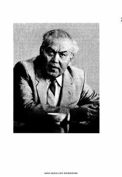

TAOdil Yoqubovning "Adolat manzili" romani o'rin olgan tanlangan asarlarining birinchi jildi.
Mazkur kitob taniqli o'zbek yozuvchisi Odil Yoqubovning to'rt jildlik tanlangan asarlarining birinchi jildi bo'lib, unda adibning "Adolat manzili" romani o'rin olgan. Asarda insoniy munosabatlar, adolat va hayotiy haqiqatlar badiiy talqin etilgan. Kitobxonlar uchun adabiy-estetik zavq beruvchi mumtoz asarlardan biridir.